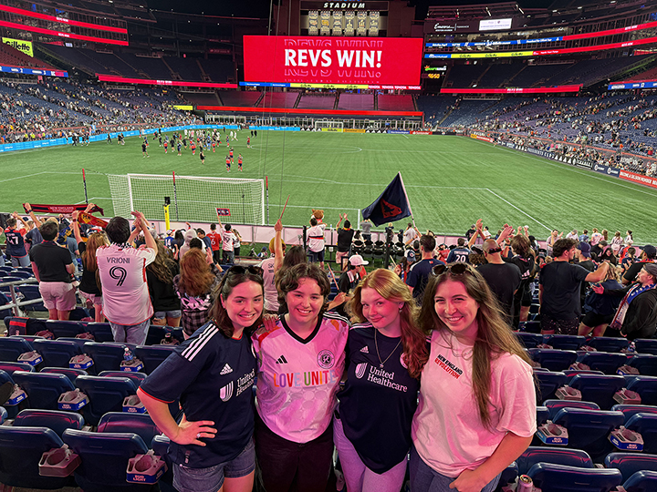
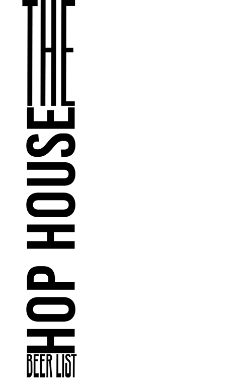
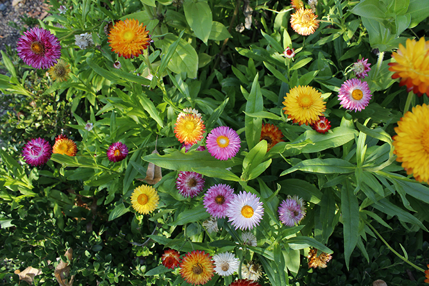

Hi, my name is Presley Floyd, my birthday is Febuary 22nd 2006 and i am 19. I'm from Massachusetts, and I'm a sophomore at Lesley University, majoring in graphic design because I love being creative. I hope to use design as a tool to do good, to "Make a Difference and Make a living"- Noah Scalin. I love typography; I want to create type that is both beautiful and meaningful.

This was a project I did for Type 1, where we had to create our own alphabet. I chose to base mine on cursive writing, and for each letter, I drew a flower whose name started with that letter.
This is a project I am currently working on in Type Two. We are making beer posters, and I really love the way I manipulated the type in this.
I took this photo while I was learning to use my Canon camera, and I love the variety of colors in it. I used it as part of my monogram.
| who? | What? |
|---|---|
| My sister maddy | picking out her engament ring |
| my friends maddie and kirsten | makeing pizzas and watching movies |
| my nonna | haveing a crochet and knitting night |